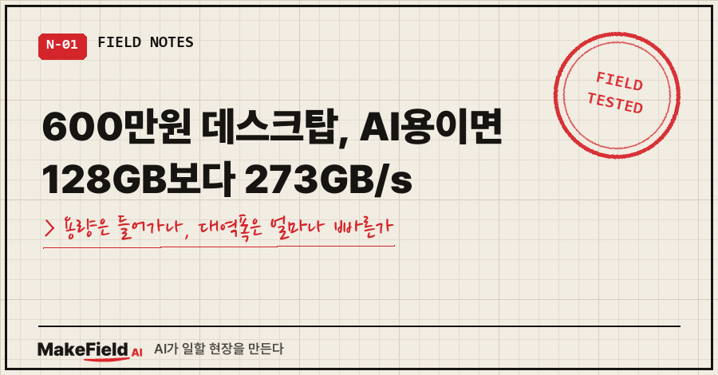
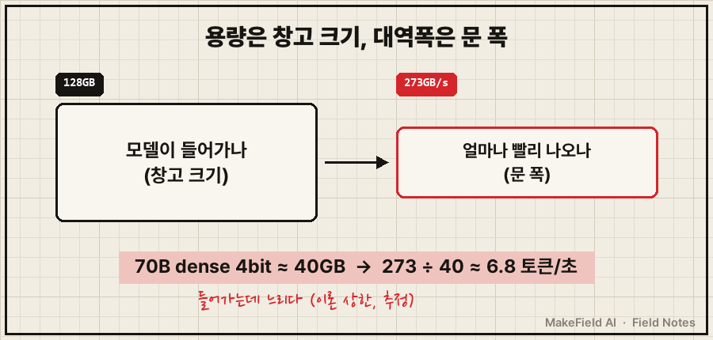
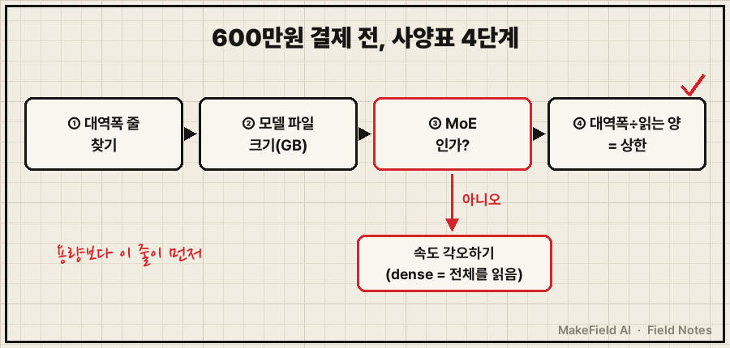
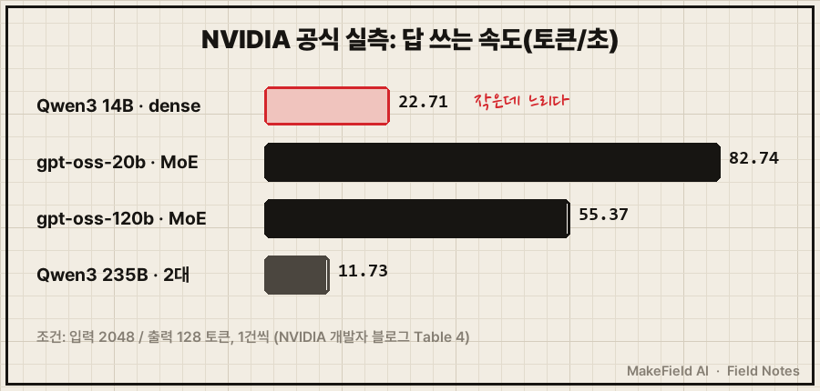

600만원 데스크탑을 AI 돌리려고 알아보는 중이라면, 사양표에서 메모리 용량 줄 말고 메모리 대역폭 줄부터 찾으세요.
용량은 "모델이 들어가나"를 정하고, 대역폭은 "답이 얼마나 빨리 나오나"를 정합니다.
핵심만 적으면 이래요. AI 데스크탑 DGX Spark의 메모리는 128GB지만 대역폭은 273GB/s이고, NVIDIA 공식 측정에서 1,170억 파라미터 MoE 모델(gpt-oss-120b)은 초당 55.37토큰, 그보다 훨씬 작은 140억 파라미터 일반 모델(Qwen3 14B)은 초당 22.71토큰을 냈습니다. 큰 모델이 더 빨랐어요. (2026년 11월 23일 확인 기준)
저는 제조 현장 자동화 일을 15년 해 온 엔지니어예요. 남의 장비를 고를 땐 카탈로그 첫 줄보다 병목 한 줄을 먼저 찾는 게 습관인데, 제 돈 600만 원 앞에서는 그 습관이 꺼져 있었습니다..
1. 600만원 데스크탑, 제가 본 문구는 이거였어요
예산 600만 원을 잡고 두 달 동안 장바구니에 담아뒀던 건 AI 전용으로 나온 손바닥만 한 데스크탑이었어요.
마음을 움직인 건 딱 두 줄이었어요. 제조사 사양 페이지 문구로 옮기면 이렇습니다(→ https://www.nvidia.com/en-us/products/workstations/dgx-spark/).
128GB coherent unified system memory
AI models up to 200 billion parameters128GB 통합 메모리, 2,000억 파라미터 모델까지.
이 두 줄을 보고 "내 책상에서 큰 모델이 막힘없이 돈다"고 읽었어요.
장바구니를 비운 이유(돌릴 작업 없음·서랍 속 대체품·틀린 가격 기억)는 이전 글에 적었어요. 이 글은 그 뒤 사양표를 다시 뜯어보다 발견한 "그 두 줄은 속도를 말하지 않는다"는 부분입니다.
2. 원인: 용량은 창고 크기, 대역폭은 창고 문 폭이에요
9월 말에 같은 장비 사양표를 처음부터 다시 읽었어요. 이번엔 맨 윗줄 말고 아래쪽 줄까지요.
NVIDIA 공식 사양표에는 이렇게 적혀 있습니다(→ https://www.nvidia.com/en-us/products/workstations/dgx-spark/).
| 항목 | 공식 사양 |
|---|---|
| System Memory | 64GB 또는 128GB 통합 메모리 (64GB는 OEM 제조사 경유) |
| Memory Interface | 256-bit |
| Memory Bandwidth | 273 GB/s |
로컬 AI가 답을 쓸 때는 글자(토큰) 하나 만들 때마다 모델 가중치를 메모리에서 읽어 와야 해요.
그래서 답 쓰는 속도의 이론 상한은 대략 "대역폭 ÷ 한 토큰에 읽는 양"으로 잡힙니다.
그날 제가 직접 계산해 본 게 이거예요. 70B급 일반(dense) 모델을 4비트로 줄이면 약 40GB인데,
273 GB/s ÷ 40 GB ≈ 6.8 토큰/초 (이론 상한, 추정)모델은 128GB 안에 넉넉히 들어가는데, 답은 초당 7토큰도 안 나온다는 계산이었어요. 상한이라 실제는 더 느리고요.
"2,000억 파라미터까지"는 메모리에 올라간다는 뜻이었지, 쓸 만한 속도가 난다는 뜻이 아니었습니다.

3. 해결: 600만원 결제 전에 사양표로 해보는 4단계
이 장비만이 아니라 AI용 데스크탑이면 어디에나 쓸 수 있는 순서예요.
- 사양표에서 Memory Bandwidth 줄을 찾는다. 없으면 판매처에 묻습니다. 이 숫자 없이는 속도를 가늠할 수 없어요.
- 돌릴 모델의 파일 크기(GB)를 확인한다. 파라미터 수가 아니라 내려받을 파일 크기예요.
- 그 모델이 MoE인지 확인한다. MoE(Mixture of Experts)란 전체 중 일부 전문가만 골라 쓰는 구조로, 한 토큰에 활성 부분만 읽어서 같은 대역폭에서 훨씬 빠릅니다.
- 대역폭 ÷ 한 토큰에 읽는 양으로 상한을 계산한다.
일반(dense) 모델 : 대역폭 ÷ 모델 파일 크기 = 상한
MoE 모델 : 대역폭 ÷ 활성 파라미터 분량 = 상한 (훨씬 큼)예를 들어 gpt-oss-120b는 공식 발표 기준 총 1,170억 파라미터인데 한 토큰마다 쓰는 건 51억 개예요. 80GB 메모리 안에서 돌아가도록 설계됐고요(→ https://openai.com/index/introducing-gpt-oss/).
그래서 그 뒤로 제 모델 고르는 첫 질문이 "이거 몇 B야?"에서 "MoE야?"로 바뀌었습니다.

4. 확인 방법: 내 계산을 공식 실측과 맞춰보기
계산이 맞는 방향인지는 NVIDIA가 공개한 같은 장비 측정값에 대 보면 됩니다. 조건은 입력 2,048토큰, 출력 128토큰, 한 번에 1건이에요(→ https://developer.nvidia.com/blog/how-nvidia-dgx-sparks-performance-enables-intensive-ai-tasks/).
| 모델 | 구조 | 답 쓰는 속도(토큰/초) |
|---|---|---|
| Qwen3 14B | 일반(dense) | 22.71 |
| gpt-oss-20b | MoE | 82.74 |
| gpt-oss-120b | MoE | 55.37 |
| Qwen3 235B (2대 연결) | MoE | 11.73 |
140억짜리 일반 모델보다 1,170억짜리 MoE가 두 배 넘게 빨라요. 압축 방식이 모델마다 조금 달라 1:1 비교는 어렵지만, "크기가 아니라 읽는 양"이라는 방향은 제 계산과 같습니다.

여러분이 보고 계신 600만원 데스크탑 사양표에도 대역폭 줄이 있나요? 없다면 그게 첫 번째 질문이에요.
5. 같은 증상, 다른 경우
- 살지 말지부터 고민이라면 → 로컬 AI 컴퓨터, 600만 원 결제 직전에 멈춘 이유 3가지
- 가진 맥북·PC 속도가 기대보다 느리다면 → MLX GGUF 속도 비교: 같은 모델도 실행 방식에 따라 속도가 갈렸어요.
- 속도는 나는데 답이 미덥지 않다면 → 로컬 LLM 할루시네이션 실험
이런 것도 궁금하실 것 같아요
Q. 600만원 데스크탑 두 대를 연결하면 두 배 빨라지나요?
메모리는 합쳐지지만 대역폭은 안 합쳐진다고 보는 게 맞아요. 공식 사양상 두 대 연결 회선은 200Gbps(→ https://www.nvidia.com/en-us/products/workstations/dgx-spark/), 초당 약 25GB라 장비 안쪽 273GB/s의 10분의 1 수준입니다. 공식 측정에서도 2대로 돌린 2,350억 모델은 초당 11.73토큰이었어요. 이득은 속도보다 "더 큰 모델이 올라간다" 쪽입니다.
Q. 그럼 128GB 용량은 의미가 없나요?
아니에요. 용량은 입장권입니다. 안 들어가면 속도 계산 자체를 못 하니까요. 용량으로 "들어가나"를 먼저 거르고, 대역폭으로 "쓸 만한가"를 따로 보는 거죠.
Q. 가격은 지금 얼마예요?
제가 8월 11일에 확인한 제조사 가격은 4,699달러였어요. 10월에는 64GB 구성이 제조사 파트너 경유로 추가됐고, 지금 공식 판매처 가격은 제가 직접 확인하지 못했습니다. 이런 숫자는 몇 달 만에 바뀌니 결제 당일 공식 판매처에서 다시 보세요.
정리하면, 600만원 데스크탑 사양표에서 제가 놓친 건 맨 윗줄이 아니라 그 아래 한 줄이었어요.
다음엔 서랍 속 소형 보드에서 같은 계산이 맞아떨어지는지 직접 재 보려고 합니다.
장비를 사기 전에 계산해 본 숫자들은 makefield.ai에도 모아두고 있어요.
출처
- NVIDIA DGX Spark 공식 제품 페이지(사양표: Memory Bandwidth 273 GB/s, 256-bit, 64GB/128GB, 모델 크기표) → https://www.nvidia.com/en-us/products/workstations/dgx-spark/
- NVIDIA 개발자 블로그, DGX Spark 성능 측정 Table 4(ISL|OSL 2048|128, BS=1) → https://developer.nvidia.com/blog/how-nvidia-dgx-sparks-performance-enables-intensive-ai-tasks/
- OpenAI, Introducing gpt-oss(117B 총·5.1B 활성, MoE, 80GB) → https://openai.com/index/introducing-gpt-oss/
태그: #600만원데스크탑 #AI데스크탑 #로컬AI컴퓨터 #메모리대역폭 #DGXSpark #로컬LLM #토큰속도 #MoE #gptoss #통합메모리 #AI장비구매 #개인AI서버 #AI하드웨어 #AI오답노트 #MakeFieldAI